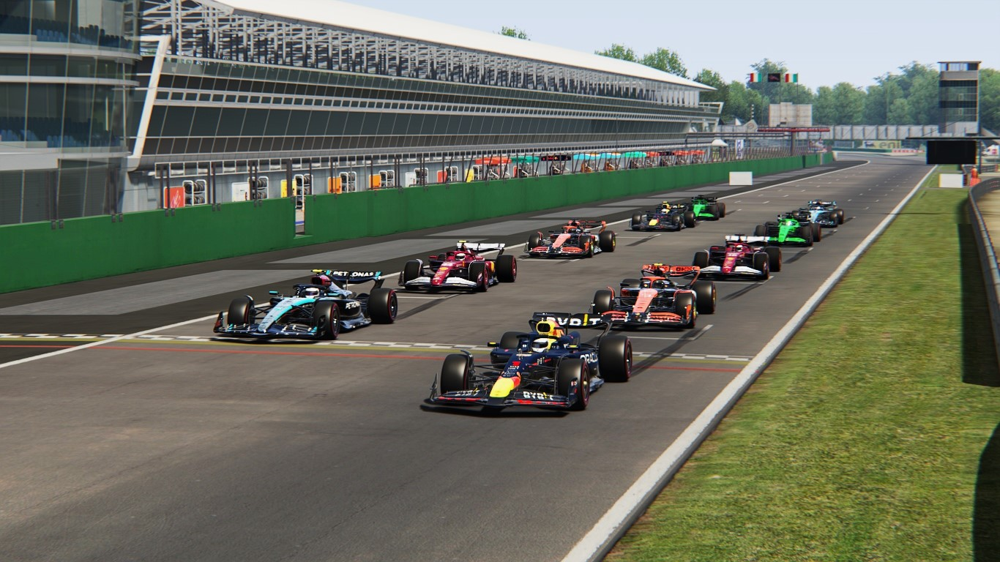

Chaos Behind, Calm Ahead: Javad Leads Ferrari to Emotional Home Victory
Monza, Italy - Round 8 of the 2027 Formula One World Championship
Ferrari's home soil delivered another unforgettable chapter in the 2027 season as Javad claimed a
heroic victory at Monza, overcoming early pressure from Verstappen, intense strategic battles, and
late-race chaos. The Tifosi were on their feet from lights out to the final lap — and they witnessed a
classic.
RACE REPORT
The grid was led away by Verstappen, who had set a new Monza qualifying record. Hamilton lined up
alongside him, with Norris and Javad on row two. But by the end of Lap 1, the order had already
exploded.
A Lightning Start from Javad
Javad launched his Ferrari perfectly, slicing past Norris into Turn 1 and aggressively diving down the
inside of Hamilton at the della Roggia chicane to grab P2 instantly. Only Verstappen remained ahead
— but not for long.
On Lap 5, after four laps of relentless pressure, Javad sent a clean, decisive move into Turn 1, taking
the lead to a deafening roar from the Monza crowd.
From that moment, he never looked back.
Mid-Race Shuffle
Behind the leader, the battle for the podium was constantly shifting:
Hamilton jumped to P2 after the pit stops but lacked the pace to keep it.
Leclerc began a brilliant charge, climbing to P2 and looking set for a Ferrari 1-2.
Norris kept himself in contention with clean, consistent pace.
But the biggest heartbreak came on the final lap.
Leclerc's Devastating DNF
Running comfortably in P3, Leclerc lost the rear at Lesmo 1, spun into the wall, and ended his race just
two corners from the finish. The Tifosi fell silent as their home hero's Ferrari sat stranded.
The Final Laps
Norris inherited P3, Hamilton stabilized P4, and Verstappen held onto P2 — but the day belonged
unquestionably to Javad.
He crossed the line for his fifth victory of the season, delivering Ferrari the dream outcome on
home turf.
2027 Italian Grand Prix - Official Race Classification:
1. Javad (Ferrari) - 14:20.805
2. Max Verstappen (Red Bull) +6.688
3. Lando Norris (McLaren) +23.448
4. Lewis Hamilton (Mercedes) +35.498
5. Gabriel Bortoleto (Sauber) +38.680
6. Yuki Tsunoda (Red Bull) +40.673
7. Oscar Piastri (McLaren) +47.360
8. Nico Hülkenberg (Sauber) +47.655
9. George Russell (Mercedes) +1:02.217
10. Charles Leclerc (Ferrari) DNF